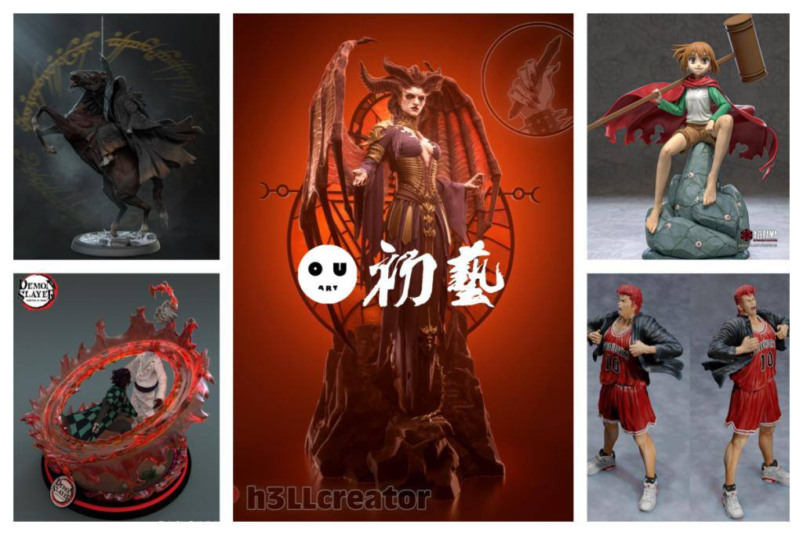
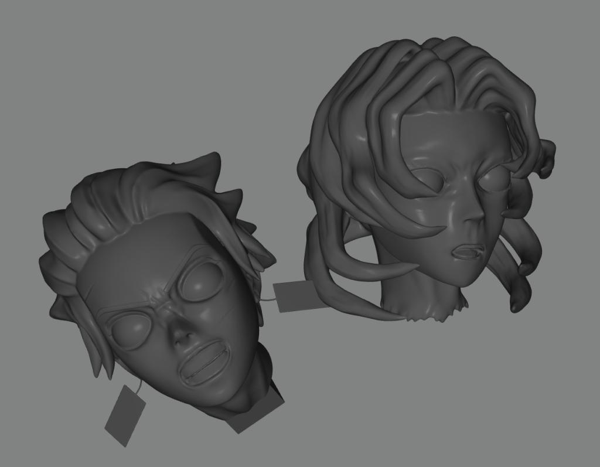
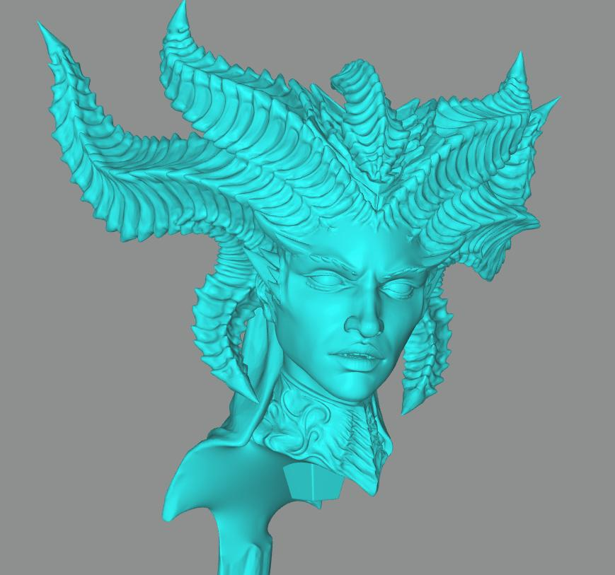
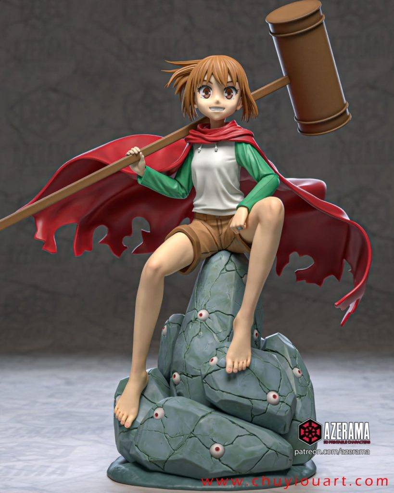
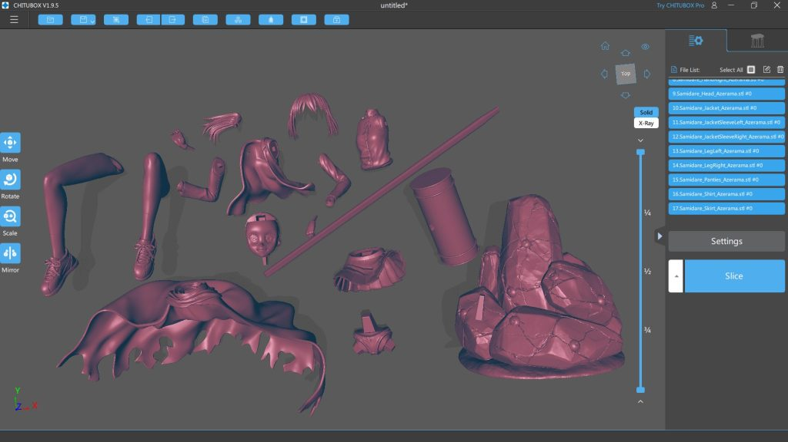
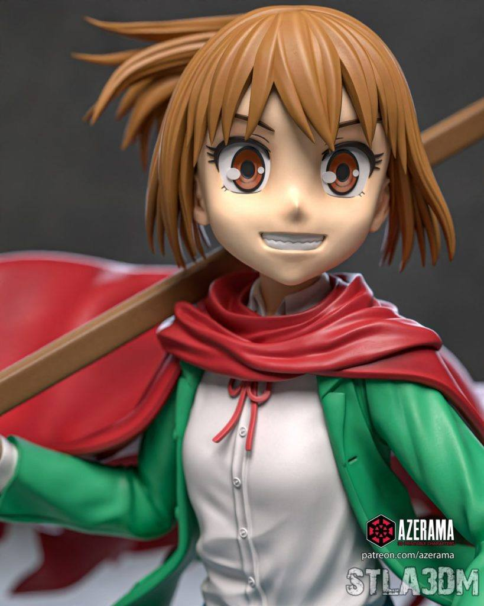
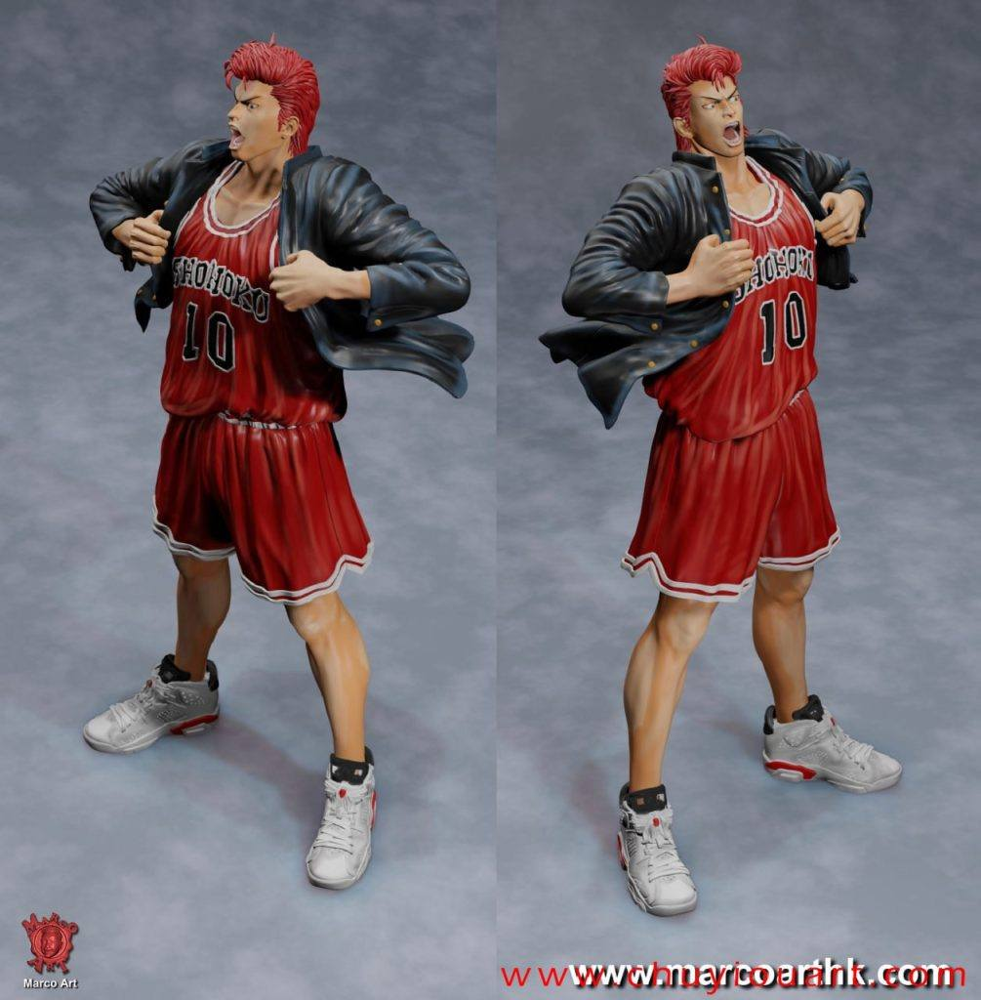

模型分享
11月05日STl图纸文件分享

1.指环王灵戒马，精度动态不错，分件有些位置容易断裂，如截图，打印尺寸不能太小。
链接：https://pan.baidu.com/s/1fA-pWtBSz9FIHLK-VB8ipA
提取码：y2iy


2.鬼灭之刃，后期可用做成专题贴的，一个碳之郎砍蜘蛛头的场景，碳之郎耳坠和头雕一体的，几乎必断，支持也难加，特效件还不错，这个模型就以学习为主吧
链接：https://pan.baidu.com/s/1nLqRepNmkjYu5oK0YuJ4ig
提取码：1u6p


3.莉莉丝，打印好是雕像级别的，精度够的，就是脸的塑造不是理想中那么耐看，大家觉得呢？链接：https://pan.baidu.com/s/1VdpjFxRavkVZ3O6eqlhESQ
提取码：emas


4.惑星公主蜥蜴骑士——朝日奈五月雨，不错的头雕细节，这种眼睛是可以涂装的，而不是贴水贴或者手动描绘圈圈，建模有合理性值得学学，分件比较多，也提供了多形态（违规形态网盘直接给我屏蔽了发不了，这样一来倒也挺好）动漫有兴趣可以去查查看。
链接：https://pan.baidu.com/s/1wWmUGHsTCDV-5OAcjxKmWg
提取码：touj





5.灌篮高手——樱木花道，造型细节不错，分件比较好组装，涂装就全凭个人本事了。
链接：https://pan.baidu.com/s/1pk9VHgLxrCZ-LCuulEkAXg
提取码：n0al


以上内容仅供个人使用（非商用）
ONLY for PERSONAL (NON-COMMERCIAL) use.
加群获得更多免费模型！